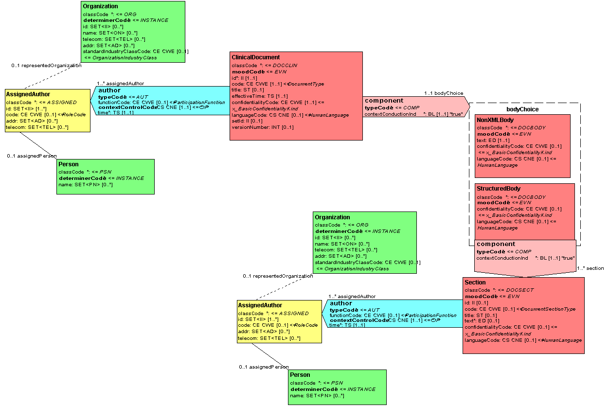
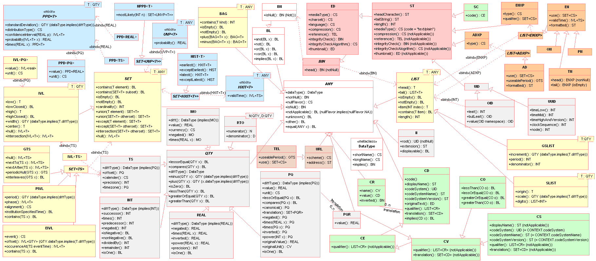
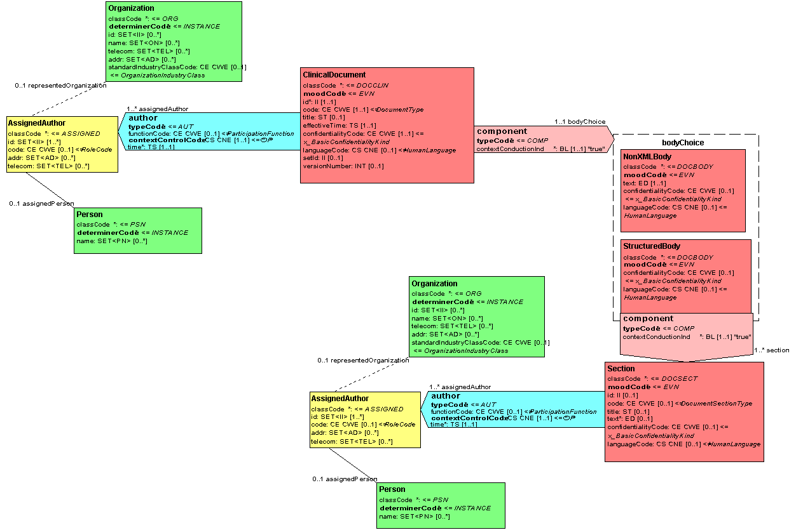
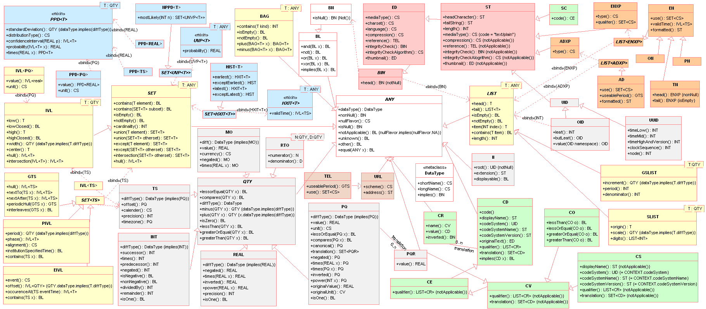

This fragment is available on index.html
This publication includes IP covered under the following statements.
| Type | Reference | Content |
|---|---|---|
| web | github.com | see Pull Request |
| web | github.com | An example of a CDA document has been provided along with a transformed version of the example using the informative CDA stylesheet . |
| web | github.com | With the representation of the CDA structures using FHIR StructureDefinitions, there is now an option on how to validate CDA documents. The CDA schemas are still valid and can be found here . Additionally, by pointing the FHIR validator at this guide, CDA instances can be validated using FHIR validators. |
| web | snomed.info | SNOMED |
| web | unitsofmeasure.org | UCUM |
|
L-ContextExample.gif  |
|
L-POCD_RM000040.gif
|
|
L-cda_figure3.gif
|
|
L-cda_figure4.gif
|
|
L-dtUML-Main.gif  |
|
lefthand.gif
|
|
tree-filter.png
|